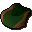
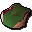
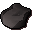

Cooked oomlie wrap

| Config name | cooked_oomlie |
| Item id | 2343 |
| Value | 35 gp |
| Weight | 300g |
| Members | Yes |
| Tradeable | Yes |
| Stackable | No |
| Options | Eat |
| Defined in | scripts/skill_cooking/configs/cooking_inv/configs/oomlie_bird_meat/oomlie_bird_meat.obj |
Cooked oomlie wrap
Deliciously cooked oomlie meat in a palm leaf pouch.
How to make
| Skill | Level | XP | Ingredients | Tool | How | Where | Makes |
|---|---|---|---|---|---|---|---|
| Cooking | 50 | 30.0 |  Wrapped oomlie | use on object | range or fire | 1 can spoil into  Burnt oomlie wrap |
Referenced in scripts
scripts/_test/scripts/cheats/cheat_bank.rs2